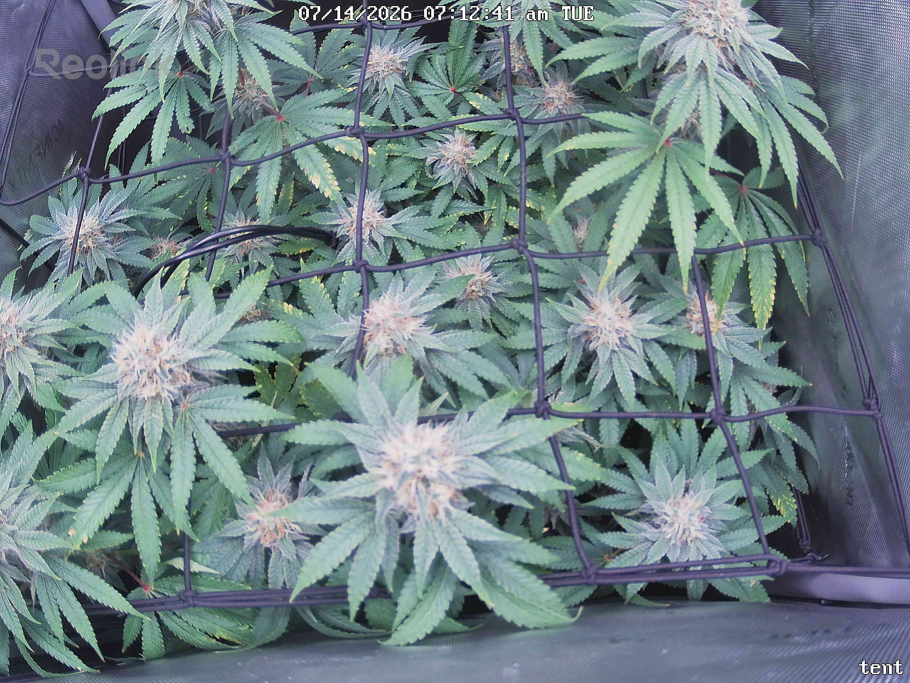
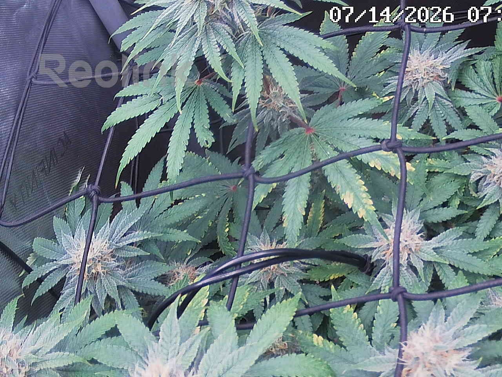
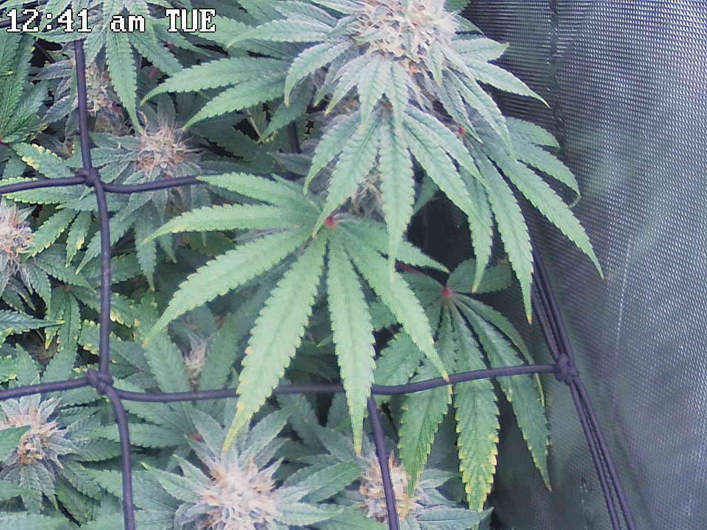
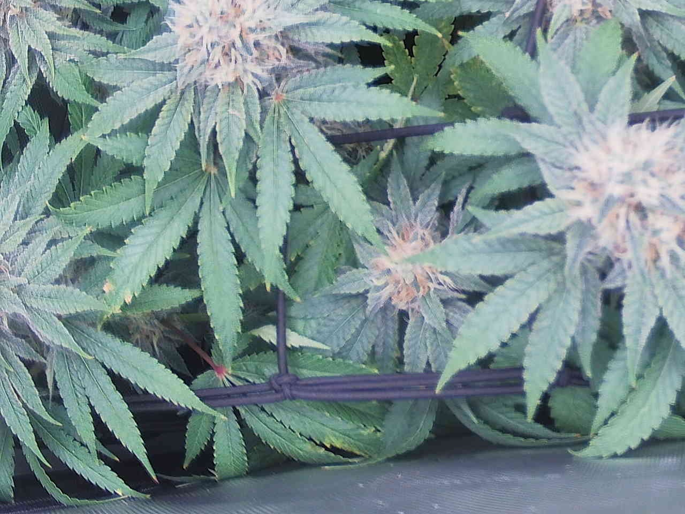
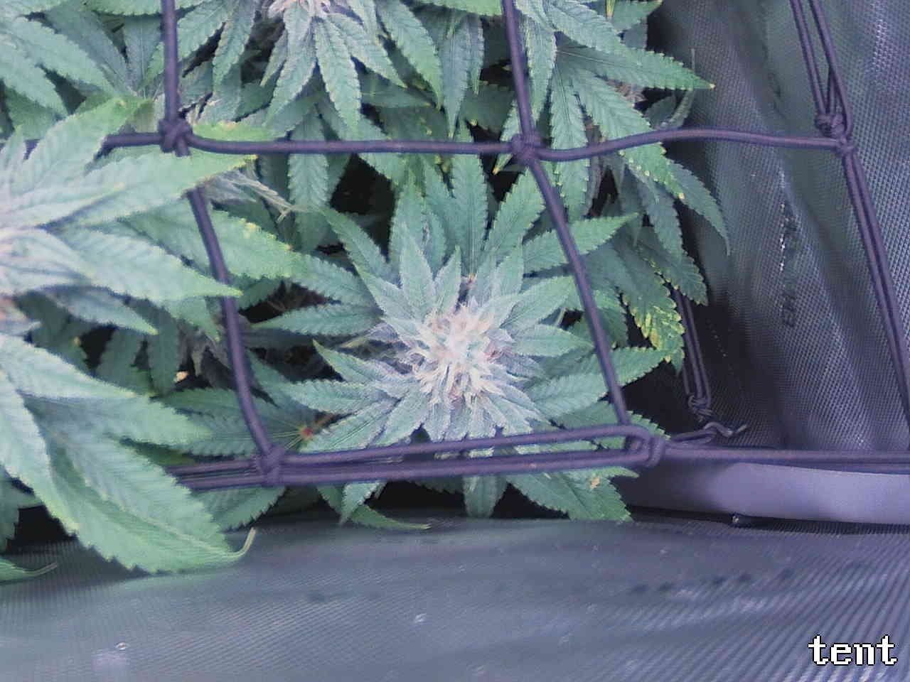

Per-quadrant analysis — the canopy shot was split into a 2x2 grid and each region compared against the previous day.
Overall the plant remains stable and on-track for ~day 41 flower, with no day-over-day deterioration in any quadrant. Ripening is progressing normally (increasing amber/tan pistils across top-center, bottom-left, and top-right colas) with dense trichome coverage, full turgor, and no signs of bud rot, pests, or powdery mildew anywhere. The interior/lower fan-leaf yellowing tracked since 7/10–7/13 continues unchanged in all four quadrants (top-left, top-right, bottom-left, bottom-right) — consistent with late-flower senescence and/or a potassium draw, still unresolved between those causes but not worsening. No quadrant is marked ATTENTION; no action is required beyond continuing to monitor the yellowing for any acceleration as harvest approaches.
Bud sites (whole plant, estimate): 13-18
Bud sites: 6-8
Bud sites: 3-4
Bud sites: 3-4